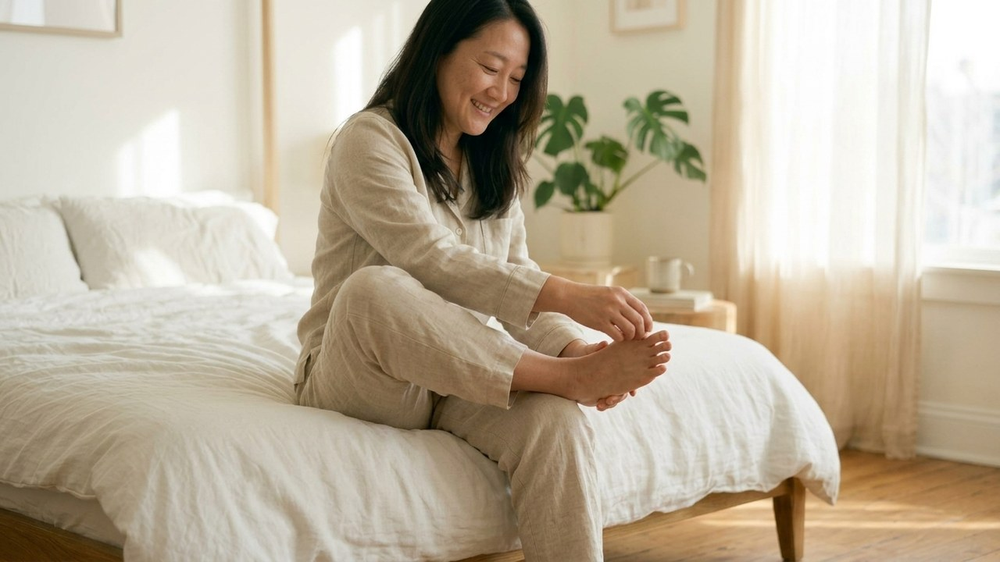
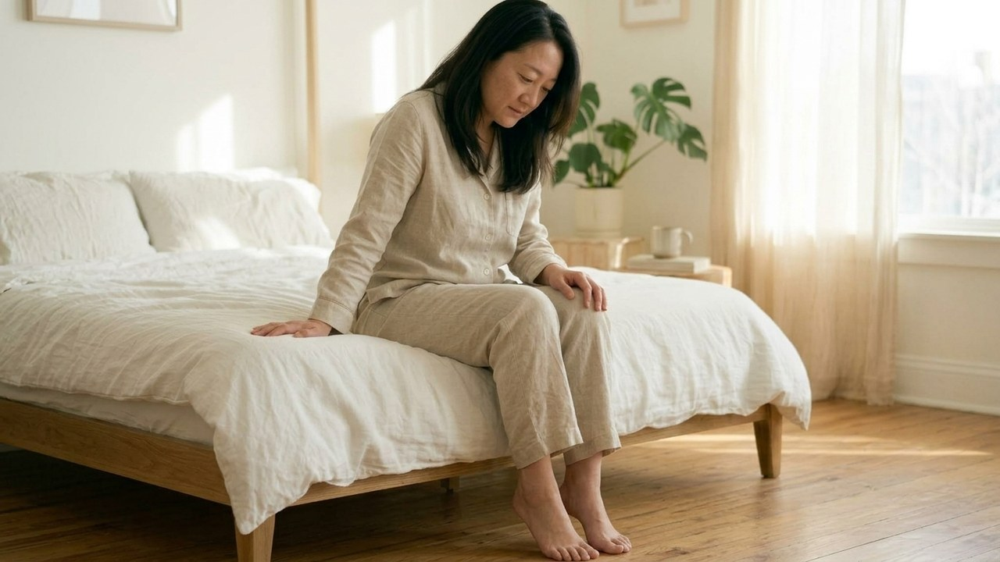
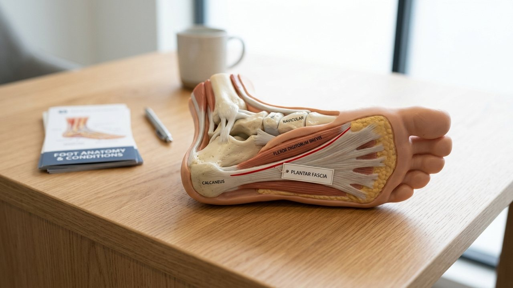
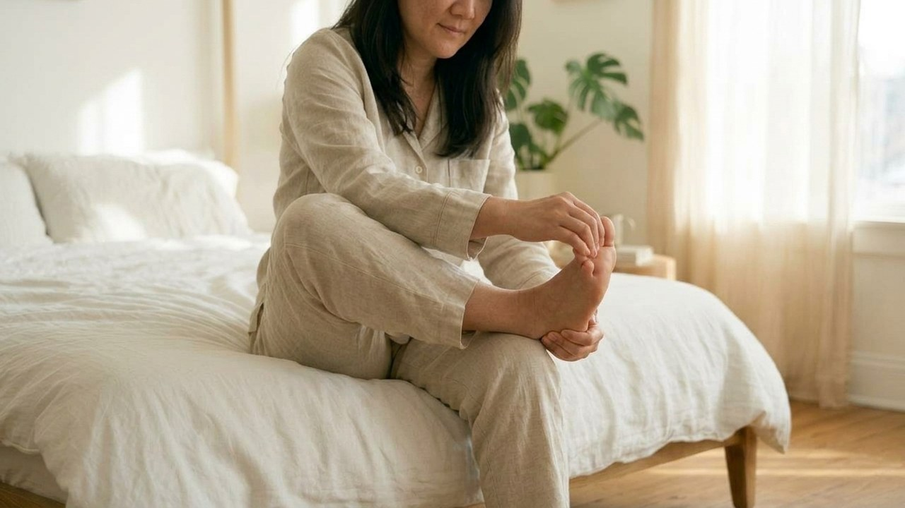
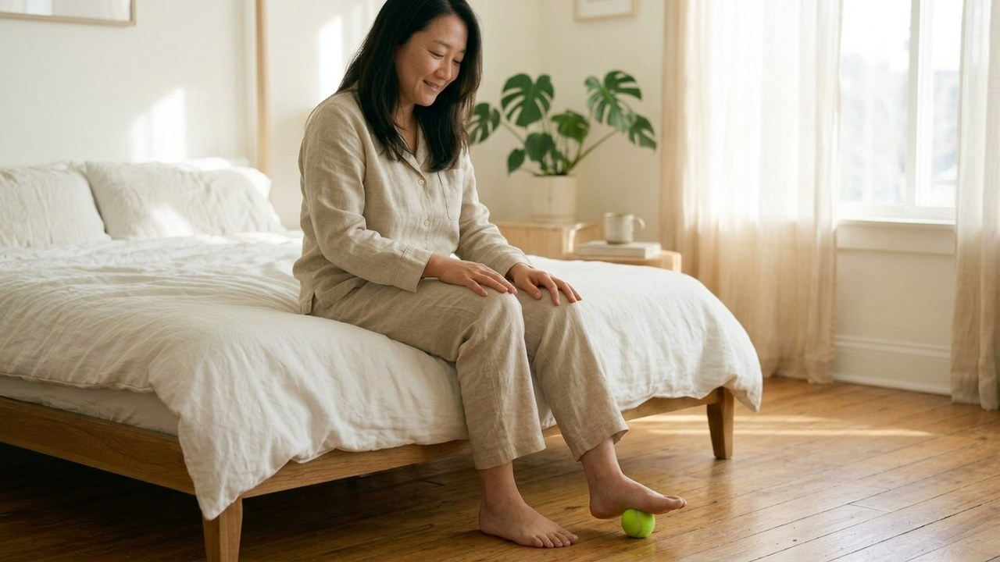
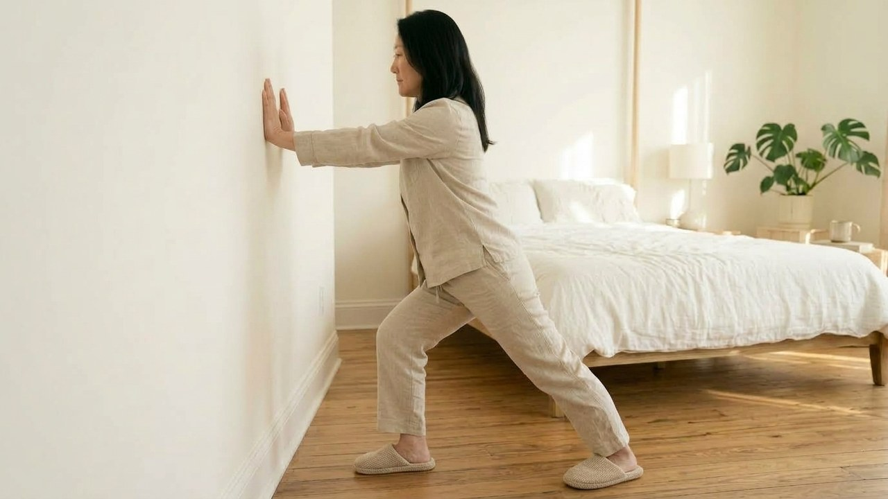

아침에 눈을 뜨고 화장실에 가려고 침대에서 내려오는 순간,
발바닥 뒤꿈치에 벼락이 치듯 날카로운 찌릿함을 느껴보셨을 겁니다.
발바닥을 온전히 디딜 수 없어 까치발로 엉금엉금 걷거나,
벽을 짚은 채 한동안 숨을 고르며 서 계셨던 경험이 있으실 텐데요.
"어젯밤 무리하게 걷지도 않았는데 대체 왜 이러지?"라며
억울하면서도 덜컥 걱정스러운 마음이 앞서셨을 겁니다.
밤새 웅크려 굳은 족저근막은 체중이 실리는 첫 3초 만에 상처를 입지만,
일어나기 전 30초 발가락 젖히기만 실천해도 발뒤꿈치 하중을 70% 이상 덜어줍니다!

평소 활동량이 많은 현대인의 발바닥 힘줄은
수면을 취하는 동안 손상 부위를 수습하고자 바짝 수축된 채 굳어버립니다.
팽팽하게 줄어든 고무줄 같은 상태에서 체중 전체를 바닥에 쿵 싣게 되면,
뼈와 힘줄이 연결되는 부위가 강제로 잡아당겨지며 강한 자극이 터지는 것이죠.
이상하게도 대여섯 걸음 절뚝거리며 걷다 보면 통증이 잦아들다 보니,
단순히 발이 저린 줄 알고 방치하다 만성적인 불편함으로 키우기 십상입니다.
이 현상은 나아진 게 아니라 일시적으로 둔감해진 착각에 불과하므로,
아침마다 힘줄에 생기는 미세한 자극을 선제적으로 막아내는 지혜가 필요합니다.

기상 시 발바닥 찌릿함을 줄이는 에디터 혀니의 셈법은 참 단순합니다.
'바닥을 바로 밟지 마시고 이불 속에서 30초 동안 발끝을 깨워주기'인데요.
침대 모서리에 걸터앉으신 다음 불편한 다리를 반대쪽 허벅지 위에 살포시 얹어보세요.
그리고 손바닥으로 발끝 전체를 부드럽게 감싸 쥔 뒤 발등과 정강이 방향으로 살며시 젖혀줍니다.

발끝을 뒤로 젖히면 발바닥 오목한 아치 한가운데 기타 줄처럼 단단한 띠가 서서히 솟아오릅니다.
이 팽팽해진 부위를 다른 손 엄지손가락으로 쓸어내리며 10초간 숨을 고르는 동작을 3회 반복해 보세요.
굳어있던 섬유 조직 사이로 따스한 온기가 돌면서 유연해져,
첫발을 내디딜 때 느껴지는 서늘한 찌릿함이 놀라울 정도로 부드러워집니다.
주변에서 골프공이나 단단한 마사지 봉으로 발바닥을 세게 누르면 시원하다고 권하는 분들이 계시죠?
하지만 열감이 있고 자극받은 부위에 돌덩이 같은 물체를 누르면 도리어 덧나게 됩니다.
단단한 표면이 여린 힘줄을 강하게 짓누르면 조직 손상이 깊어질 수 있으므로,
말랑말랑한 노란색 테니스공이나 따뜻한 음료 캔을 이용해 살살 굴려주시는 게 현명하답니다.

아울러 아침에 일어났을 때는 단단한 마루판에 맨발을 세게 디디지 마시고,
바닥 반발력을 부드럽게 감싸주는 푹신한 실내 슬리퍼를 침대 밑에 꼭 준비해 두세요.

발바닥의 평온을 되찾아주는 참된 비결은 수십만 원짜리 고가 마사지기가 아니라,
매일 아침 침대 위에서 발가락을 정성스레 늘려주는 30초의 작은 관심입니다.
오늘 밤 주무시기 전 잠자리 곁에 푹신한 실내화 한 켤레를 꺼내두시고,
내일 아침에는 눈을 뜨자마자 시원한 발가락 스트레칭으로 경쾌한 첫걸음을 맞이해 보세요!
여러분은 아침에 일어났을 때 발바닥이나 뒤꿈치가 찌릿하신 적 있으신가요?
평소 침대에서 바로 일어나셨는지, 스트레칭을 실천해 보셨는지 댓글로 편하게 들려주세요 😊
#족저근막염 #족저근막염스트레칭 #아침첫발통증 #발바닥통증 #발뒤꿈치통증 #발바닥찌릿 #족저근막염완화 #발스트레칭 #테니스공마사지 #아침스트레칭 #에디터혀니 #꿀단지